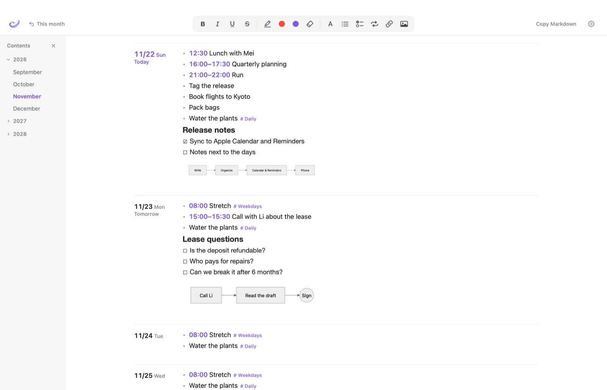
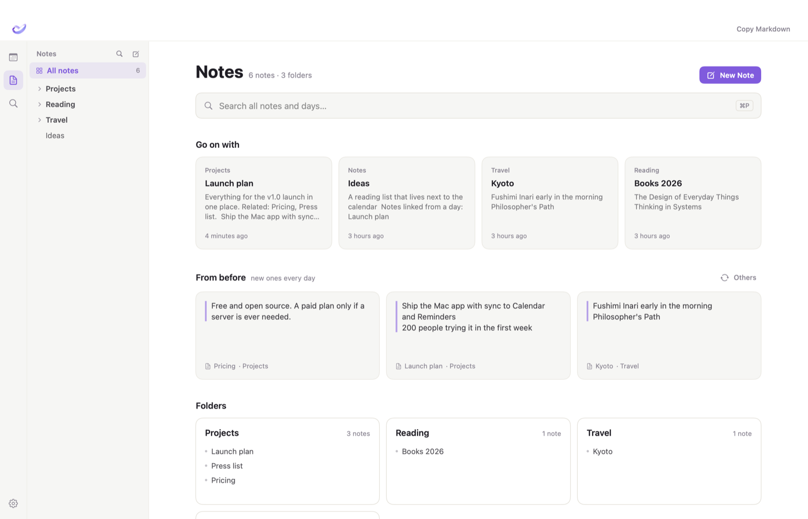
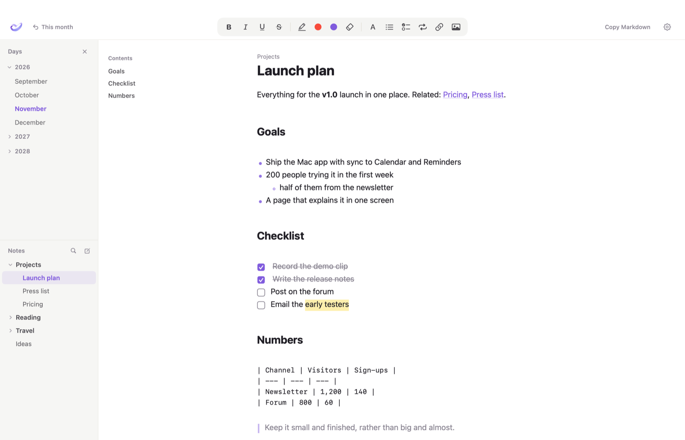

Free · Open source · For Claude Code, Codex and MCP
Tell your agent your day.It lands in your calendar.
ASMO is a planner for macOS that you write like a document: one long page of days, where finished lines become to-dos. They go to Apple Calendar and Reminders, and from there to your phone. Claude Code, Codex or any MCP app can read your days and change them too. The app runs no model of its own.
Free and MIT licensed. Apple silicon Mac, macOS 15 or later. Signed and notarized.
For agents
Your agent does the thinking. ASMO keeps the days.
Coding agents already understand what you mean. ASMO gives them a place to put it: a command line for agents with a shell, and an MCP server for apps without one. Dates and times arrive as fields, so nothing is guessed, and every change can be undone.
Claude Code and Codex
A skill teaches them the asmo command. Open a session in any folder and say what your day looks like.
The Claude desktop app
The same abilities as MCP tools: read a day, add tasks, write a page, undo. Registered for you by asmo setup.
Changes show as they happen
The app is the only writer of its data. An open calendar or page redraws the moment the agent writes.
# what an agent runs (you can too) asmo today asmo add "Call Li about the lease" --day tomorrow --time 15:00 --end 15:30 asmo set 3f9a --time 16:00 # a new start keeps the length asmo done 3f9a asmo undo
Day pages
Notes in Markdown, kept as a page you can edit.
- Write in Markdown. Headings, emphasis, links, lists, checkboxes, quotes, tables and code blocks become real formatting on the day's page.
- Diagrams without a model. A mermaid block is drawn by a copy of mermaid inside the app, and its source stays inside the picture.
- Pictures by path or link. Screenshots, photos and mock-ups are scaled to the page.
- Edit one block at a time. Agents read the page as blocks b1, b2… and replace or remove one without touching the rest.

asmo page write today <<'MD'
## Release plan
Shipping **v1.0** today.
```mermaid
graph LR
Tests --> Changelog --> Ship
```
MD
By hand, too
Write your days like a document.
Without an agent, ASMO is one long page of days, laid out like a journal: the date in the margin, the day beside it. A line with a bullet is a to-do, a line with a time is on your schedule, everything else is notes.
Sorted when you pause
Finished lines become items and move into time order, the time read however you wrote it: 2-3点, 二到三点, 2pm-3pm. Strike a line or click its bullet to check it off.
Calendar and Reminders, both ways
From today on, timed items become events and the rest become reminders, in iCloud and on your phone. Changes made there come back within seconds, new ones included. Each to-do has one reminder, which moves with it.
Repeats with one button
Daily, weekdays, weekly on that day or monthly on that date, with no syntax to learn. Each day's one is in Reminders too, to check off on the phone.
Months in a sidebar
Jump to any month from the contents, two years ahead included. Birthdays return every year, Gregorian or lunar, at the moment the day begins in their time zone.
Notes beside the days
A folder of Markdown notes with a home page of what to go on with and what you wrote before. Headings from the toolbar, tables, callouts, formulas, diagrams, Excalidraw drawings and [[links]], drawn in place. Type # in a day to join a line to a note, opened right there. An Obsidian vault works as it is, and syncs through Git.
English and Chinese
The interface follows your Mac, or pick a language in Settings. What you write stays exactly as you wrote it.
Yours
Your data is a local file on your Mac. No account and no server of ASMO's own; your other devices are reached through your own iCloud.


Install
Download, open, then just ask.
Download
Get the zip from GitHub Releases, unzip it and move ASMO to Applications. It is signed and notarized by Apple.
Open it
ASMO connects Claude Code, Codex and the Claude desktop app on your Mac by itself. Nothing to type; Settings shows what is connected.
Talk to your agent
Open a new session and say what your day looks like. New versions arrive with one click: ASMO checks for updates by itself.
FAQ
Plain answers.
Is it free?
Yes. ASMO is MIT licensed, with no account, subscription or usage limit. The source is on GitHub.
Does the app use AI?
No model runs inside ASMO. The agent you already use does the understanding; ASMO stores exactly what it is told. Lines you write by hand are turned into dated items by date-and-time rules.
What does my agent send, and to whom?
ASMO only receives commands on your Mac. What your agent sends to its own provider is between you and that agent.
Can I undo what an agent did?
Yes. asmo undo (or the undo MCP tool) takes back the last change, and the ones before it, until the app is restarted.
How does it update?
ASMO checks GitHub Releases after it opens and once a day. When a new version is out it asks; Update Now downloads it, checks the signature, replaces the app and reopens it. Your data is not touched.
Which Macs are supported?
Apple silicon Macs with macOS 15 or later. On the iPhone, your items are in Calendar and Reminders; an iPhone app builds from the same source but doesn't sync directly yet.